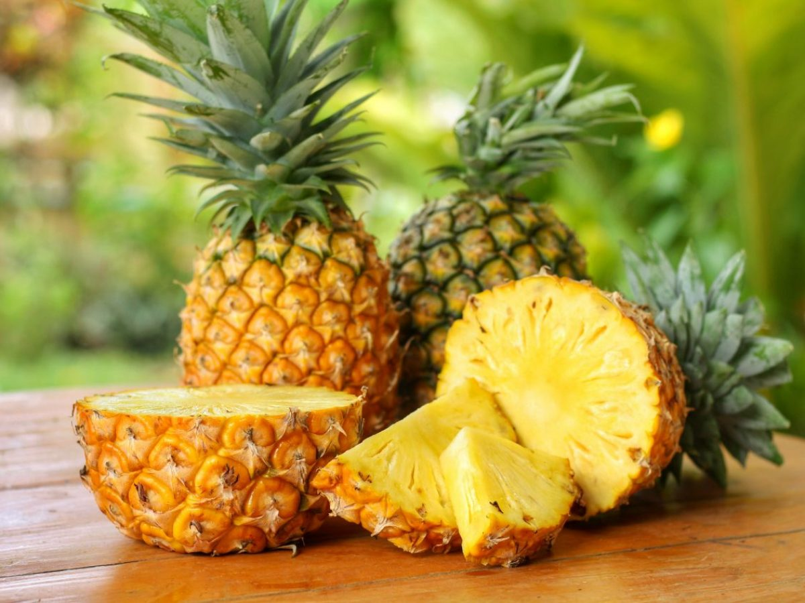

Buah-buahan dengan Vitamin C Tinggi
Jeruk
Jeruk kaya akan vitamin C dan sangat baik untuk kesehatan kulit dan sistem kekebalan tubuh.
Kiwi
Kiwi mengandung lebih banyak vitamin C daripada jeruk, membantu meningkatkan kekebalan tubuh.
Stroberi
Stroberi kaya antioksidan dan vitamin C, baik untuk kesehatan jantung dan kulit.
Pepaya
Pepaya kaya vitamin C dan serat, baik untuk pencernaan dan kesehatan kulit.
Nanas
Nanas mengandung vitamin C serta bromelain, enzim yang baik untuk pencernaan.
Mangga
Mangga mengandung vitamin C dan A, baik untuk kesehatan mata dan kulit.
Jambu Biji

Jambu biji memiliki kandungan vitamin C yang sangat tinggi, baik untuk kekebalan tubuh.